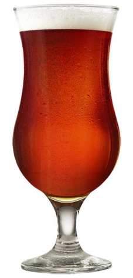

Irish red ale

Irish red ale, also known as red ale or Irish ale, is a style of pale ale that is brewed using a moderate amount of kilned malts and roasted barley, giving the beer its red colour. Its strength typically ranges from 3.8% to 4.8% alcohol by volume, although some craft varieties can be as high as 6%.
In the United States, "Irish red" is sometimes used describe a darker amber ale or a "red" beer that is a lager with caramel colouring. However, these beers are not Irish red ales.
Ingredients (15l batch):
- Grain Malts
- 2kg Pale Ale
- 120gr Melanoidine
- 120gr Crystal 50
- 120gr Crystal 100
- Hops
- 10gr Fuggle(60' boiling)
- 10gr Fuggle(60' boiling)
- Yeast
Step by step
- Mill the grains and dough-in targeting a mash of around 3l of water to 1 kg of grain (a liquor-to-grist ratio of about 3:1 by weight) and a temperature of 67 °C. Maintain this temp. at least for 60min o more (I usually leave it for 90min to make sure of extract the sugars and get the enzymatic conversion.
- Recirculate the wort while heating it until the temp. raises to 76 °C. The first thing is to get a more clear wort, and the second to stop the enzymatic conversion. Sparge slowly with 77 °C water, collecting wort until the pre-boil kettle volume is around 18l or the wort gets the gravity of 1.030 (9.5 °P).
- The total wort boil time is 60 minutes. Add the bittering hops. Add Irish moss or other kettle finings with 15 minutes left in the boil.
- After finished the boil add the rest of the hops, making sure of first do a good whirpool, while chilling the wort to 67 °F (19 °C).
- Puor the worth into the fermenter, add the entire package of yeast and aerate thoroughly. Ferment in a rage of temp between 19 °C and 22°C, until the yeast drops clear. At this temperature and with healthy yeast, fermentation should be complete in about one week or less. Allow the lees to settle and the brew to mature without pressure for another two days after fermentation appears finished.
- Rack to a keg and force carbonate or rack to a bottling bucket, add priming sugar, and bottle. Target a carbonation level of 2.5 volumes.
References
Return to main page